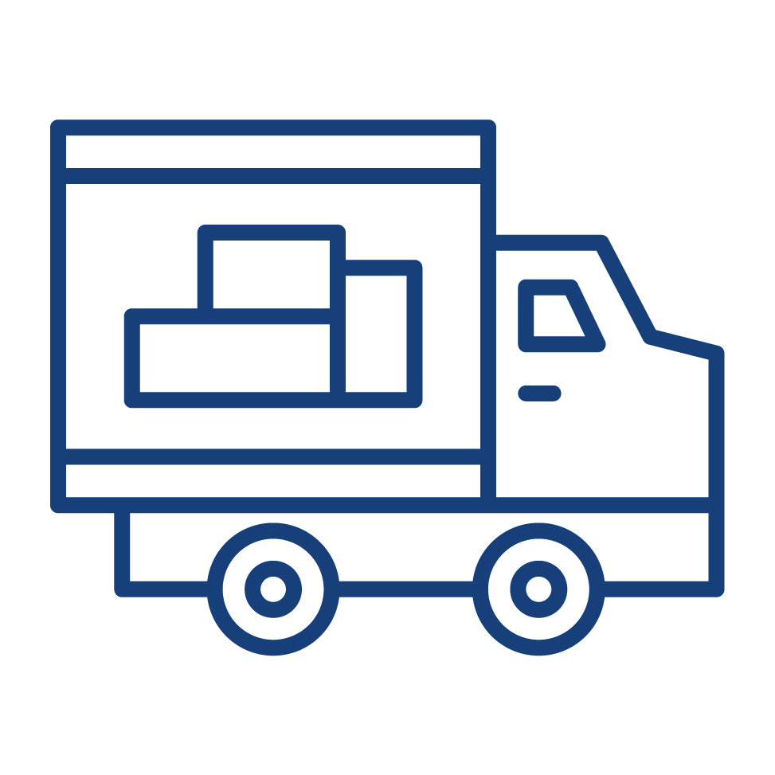

Siempre estamos en búsqueda de los siguientes perfiles:
Operario de anaquel
Se encarga de distribuir las cargas, las mercancías por el almacén de acuerdo a las normas fijadas en las instalaciones al efecto. Para ello: Comprueba, clasifica, coteja y marca la mercancía que entra en el almacén para ser ubicadas en el lugar.
Funciones
- Tener un control del ingreso y salida de los productos mediante uso del KARDEX, registrando la fecha y cantidad enviada.
- Mantener los espacios limpios.
- Contabilizar los productos que serán colocados en anaquel.
- Realizar un inventario diario de los productos.
- Solicitar mercadería en caso no se cuente con el stock necesario.
- Sacar correctamente el producto con el lote solicitado empleado el método PEPS ya que se puede generar un descuadre de stock.
Chequedor de almacén
Es responsable por el adecuado empleo y mantenimiento del equipo, los instrumentos, útiles y los materiales que usa en su trabajo, tales como libretas de chequeo, pólizas de desalmacenaje, autorizaciones de la aduana y el registrador de información.
Funciones
- Chequear mercaderia saliendo del almacén.
- Revisar estado fisico de entrada y salida de mercancía.
- Realizar conteo de materiales a cargar o descargar.
- Registrar en orden cronológico la salida de material del almacen.
- Notificar al supervisor inmediato cualquier situación o condición que afecte el correcto desempeño de la gestión de chequeo.
- Verificación de factura de compra del cliente Vs. mercancia despachada.
Transportista

Responsables de la entrega y recogida de mercancías tanto a nivel nacional. Sus responsabilidades incluyen, entre otras, cargar el camión, descargarlo en el punto de entrega, hacer el recorrido y realizar el mantenimiento básico de los vehículos.
Funciones
- Tener una alta capacidad de concentración.
- Ser una persona capaz de motivarse con un trabajo.
- Tener capacidad para seguir instrucciones.
- Darle gran importancia al cumplimiento de los métodos de seguridad.
- Tener buenas condiciones físicas para cargar y descargar mercancía.
- Tener disponibilidad para trabajar por las noches y en fin de semana.
¿Qué
beneficios
tiene un
#experto DECO?

Planilla completa

Atención médica ESSALUD

Asignación familiar

Línea de carrera

Capacitación constante

Seguridad y Salud ocupacional
Así puedes convertirte en un
#experto DECO
Postula
directamente y en tiempo
real a las vacantes disponibles
en nuestro portal
de empleo.
#experto DECO
Postula
directamente y en tiempo
real a las vacantes disponibles
en nuestro portal
de empleo.